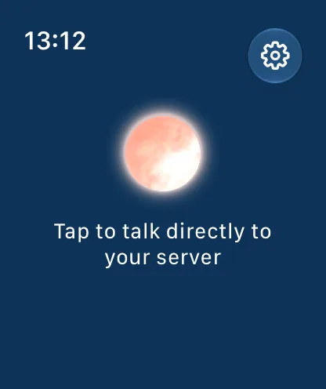
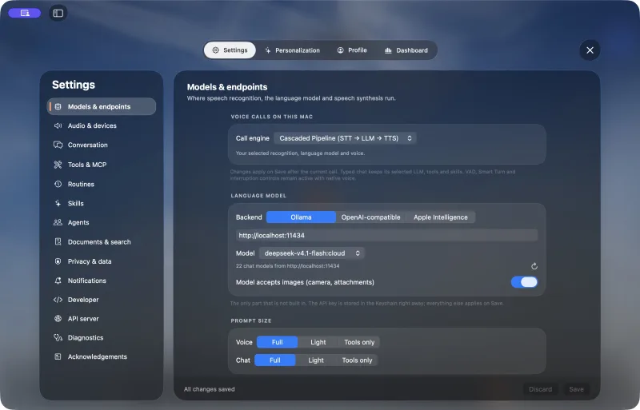
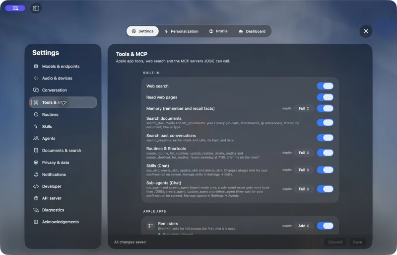
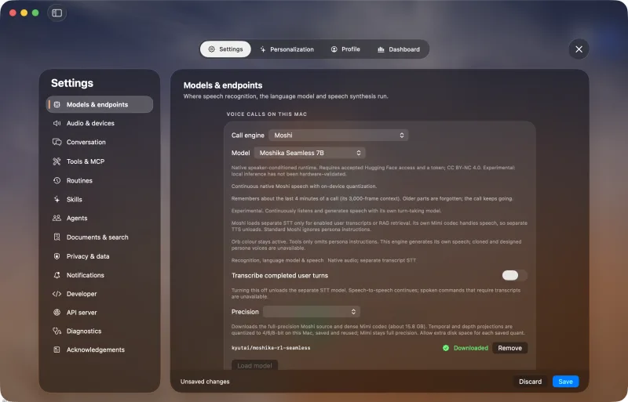
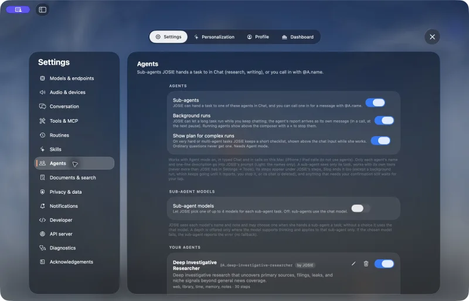
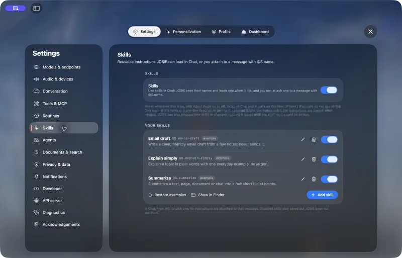
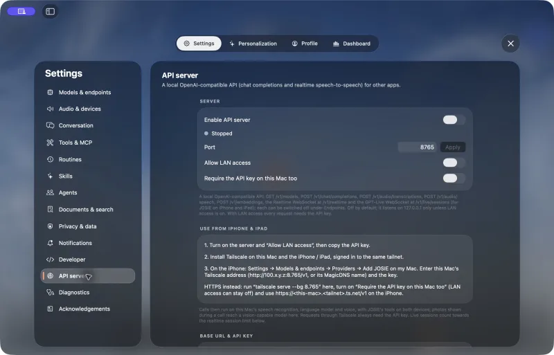
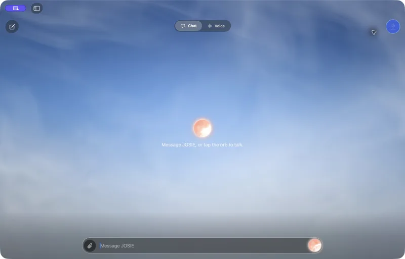
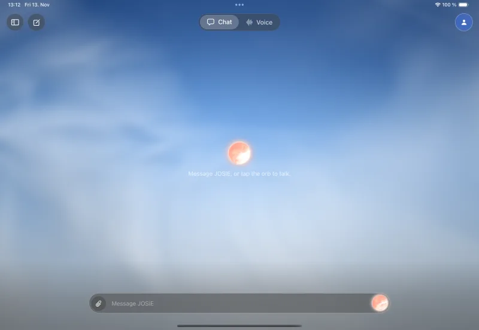
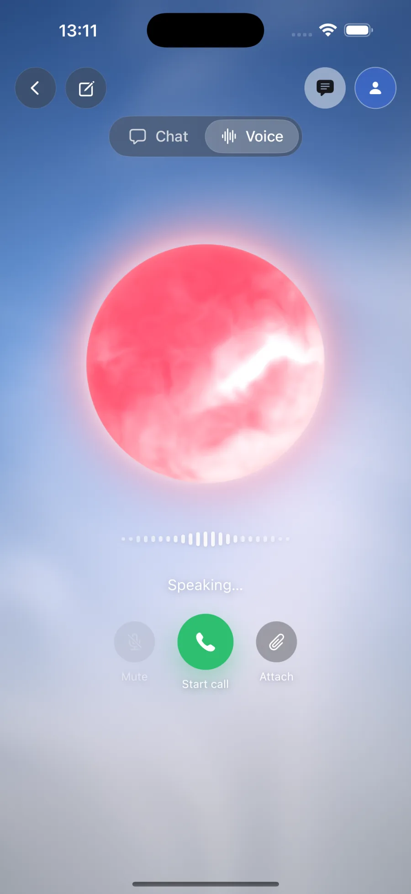

Interrupt it like a person.
It knows when you have finished talking, and it stops the moment you start again. Echo cancellation keeps its own voice out of your turn.
Launching December 1 · Free for Apple Silicon
Meet JOSIE. Talk the way you talk, interrupt whenever you like, and let it take care of the small things. Hearing and speech stay on your Mac.
Tap Start call to talk
Message JOSIE, or tap the orb to talk.
The interface above is live. Press the green button, or switch to Chat.
Gets things done
JOSIE works inside the Apple apps you already use. The reminder lands in Reminders. The event is in Calendar. The message waits in Messages until you tap Send.
Remind me to bring a jacket at 7:30.
Added. I’ll remind you at 7:30.
Put lunch with Sam on Friday at noon.
Lunch with Sam is on your calendar for Friday at 12:00.
Find a pharmacy near me that’s still open.
Apotheke am Markt is open until 20:00, six minutes on foot.
Text Alex that I’m running ten minutes late.
Drafted in Messages. Tap Send when it looks right.
The real thing
A real session on a MacBook Pro M4 Pro, with Qwen3 speech recognition and synthesis at 4-bit and DeepSeek 4.1 Flash on Ollama Cloud. A conversation turns into work, with more than 100 tool calls along the way.
Open the post on X ↗Features
It knows when you have finished talking, and it stops the moment you start again. Echo cancellation keeps its own voice out of your turn.
Three short phrases, and it can tell you apart from everyone else in the room.
Your voice never leaves the Mac. Run the language model locally, or bring the provider you trust.
Choose a preset, clone a voice from a short recording, or describe a new one in words. Swap the ears and the voice engine whenever you like.
Start, end and mute a call from Apple Watch, or talk to your server straight from its microphone.

Knows when you’ve finished talking. Interrupt just by speaking.
Learns you from three short phrases and tells people apart.
Presets, a clone from a short recording, or a voice described in words. Qwen3-TTS, Kokoro, Gradium Phonon, Ming-3.0, ZONOS3-Mini and more.
Qwen3-ASR, NVIDIA Parakeet, Voxtral Realtime, Whisper, IBM Granite Speech or Apple’s recognizer. All on your Mac.
Answers when a sentence starts or ends with your wake word, with a follow-up window.
Volume follows background noise, with echo cancellation.
Unloads the speech models after 5 to 240 quiet minutes. The next call loads them again.
Ollama, Anthropic’s Claude, any OpenAI-compatible service, or Apple Intelligence.
JOSIE, JARVIS, HAL 9000, Her, Joi or your own, each with a prompt, voice and orb colour.
Separate instructions for Chat and Voice. Typed messages get text replies even mid-call.
Turn on the camera and ask about what it sees, with an image-capable model.
The Library reads Word, PowerPoint, pictures and PDF figures, and embeds audio and video.
Hand multi-step work to specialists. Call skills and agents in with @.
Use the Mac as the provider from iPhone and iPad, at home or over Tailscale.
Start, end and mute a call, or talk through the Watch’s own microphone.
The background follows the real time of day, under Liquid Glass.
OpenAI-compatible chat, speech, embeddings and /v1/realtime, off until you turn it on.
A dashboard of clients, streams and tool calls, live.
Export calls as fine-tuning data or a MoshiRAG dataset. Delete what you select.
Under the hood
The cascaded pipeline chains specialist models you choose yourself. The nine native engines are single speech-to-speech models: LFM3 answers your finished turn, the other eight are full duplex and listen while they speak. Pick one per call. All of them run on your Mac.
Cascaded · the default
Native · turn-based
Native · full duplex
Cascaded · the default · JOSIE · Your choice
Specialist models in a chain, each one swappable. The most control: any language model, every tool, any voice.
Barge-in. A second of voiced speech that WeSpeaker says isn’t JOSIE’s echo stops playback with a 150 ms fade, and history is cut to the words you heard.
Speculation starts the language model before Smart Turn confirms you are done, and holds its output until it does.
Native · turn-based · Liquid AI · Audio 2B · Omni 2B
One compact model hears and speaks for itself. JOSIE’s VAD and Smart Turn hand it your finished turn; real work goes to the language model you picked.
delegate_task. Hands a request to your selected language model with your tools and skills, waits for the result, then LFM3 speaks it.
Not full duplex: it answers completed turns. LFM3-Omni also takes camera input.
Native · full duplex · NVIDIA · 11B
Listens, thinks and speaks in one model. Every 80 ms it sums your audio with its text and function channels into a single step.
delegate_task. Sync or async. The report goes back in through its native function-response channel at a quiet moment.
A learned begin-of-speech token decides when to talk. It writes your transcript itself; every other duplex engine uses a separate recogniser for that.
Native · full duplex · Kyutai · 7B
Models both sides of the call at once: 17 streams every 80 ms, its text, eight codebooks of your voice and eight of its own.
Moshika RAG. A special text token calls your language model. The answer comes back as one vector per 80 ms frame while Moshi keeps talking.
Moshiko, Moshika (default), Moshika Seamless and Moshika RAG, or your own fine-tune in Moshi’s layout. The voice comes with the checkpoint.
Native · full duplex · inclusionAI · Omni 9B
Watches and listens in one-second units, decides each second whether to listen or speak, and delegates work without pausing the call.
<delegate>. Becomes delegate_task to your language model. Only the finished result returns, in-stream as <backend> text, and Venus decides when to say it.
Built-in reference voice. English and Chinese.
Native · full duplex · naklecha · 413M
Trained only on recorded conversations, never a word of text. No text stream at all: it predicts when to talk the way it predicts sound.
Reads 8 codebooks of its own voice and 8 of yours. Its voice varies: it learned it from conversations.
Native · full duplex · Avera Labs · 8B
A half-duplex model taught full-duplex manners: every 200 ms your audio and its own voice tokens are added into one step.
Built from Fun-Audio-Chat-8B. An optional persona sentence joins its system prompt; the voice is CosyVoice3’s own.
Native · full duplex · Higurashi AI · 4B
Every 133 ms your speech, its last word and its last sound are summed into one position of a single language model. No audio tokens at all.
Your persona text becomes its character card; it imitates your selected voice clip from up to 180 s of reference. Nine languages.
Native · full duplex · Adventists AI · 4B Flash
A thinker that writes its reply with laughter and sighs, and a talker that performs it while the thinker is still writing.
Am I done?. When you pause, the thinker itself is asked whether you have finished at 0.2, 0.35, 0.5, 0.8 and 1.3 s, and replies anyway at 2 s. Talking over it cuts the reply; a short “mm-hm” lets it carry on.
It starts speaking 0.5 to 0.8 s after you stop. English and Chinese.
Native · full duplex · Trelis · duplex-1 200M
A small two-track model: you are track one, it speaks as track two, with words and Mimi codes for both summed into each step.
A research checkpoint: much of its speech is not intelligible yet.
| Engine | Size | Core | Step | Remembers | Tools in JOSIE |
|---|---|---|---|---|---|
| Cascaded pipelineJOSIE | Your choice | Your language model | Per turn | Last 40 turns | All tools |
| LFM3Liquid AI | Audio 2B · Omni 2B | LFM3 2B | Whole turns | 24,576 tokens | Via your LLM |
| Nemotron VoiceChatNVIDIA | 11B | Nemotron-H, 56 layers | 80 ms | About 8 min | Via your LLM |
| MoshiKyutai | 7B | Helium 7B + depth transformer | 80 ms | About 4 min | RAG variant |
| Realtime VenusinclusionAI | Omni 9B | Qwen3-8B (MiniCPM-o) | 1 s units | 6,000–8,000 tokens | Via your LLM |
| caramel-1naklecha | 413M | Own 413M, no text | 80 ms | About 4 min | Voice only |
| AwakenAvera Labs | 8B | Qwen3-8B (Fun-Audio-Chat) | 200 ms | About 3 min | Voice only |
| HaruHigurashi AI | 4B | Qwen3.5-4B | 133 ms | Up to 60 min | Voice only |
| Sophon-RealtimeAdventists AI | 4B Flash | Qwen3-4B thinker + Qwen3-TTS talker | 80 ms | 8 exchanges / 120 s | Voice only |
| DuplexTrelis | duplex-1 200M | Own 200M, two tracks | 80 ms | 3–5 min | Voice only |
Native engines are experimental. Figures come from JOSIE’s own implementation of each engine; memory is approximate. Tool routing and iPhone-to-Mac calls have their own sketches.
Make it yours
Keep the language model on your Mac with Ollama, connect Claude or an OpenAI-compatible service, or choose Apple Intelligence. Set Full or Light prompts for Voice and Chat, and pick how calls run.
Tools need a tool-calling model.

Connect the Apple apps you use, turn on web search, and add MCP servers. Set Read, Add or Full access per tool.
Sending mail or editing events waits for your confirmation.

JOSIE remembers useful facts, finds things in earlier conversations, and pulls the right passage from your documents.
Retrieved context goes to whichever model you chose.

Agent mode searches, reads, checks and hands focused tasks to specialists. Give each one its own instructions, tools and step limit, and call it in with @.
Opt-in. Helpers stay inside the access you gave JOSIE.

Turn a set of instructions into a reusable Markdown skill: a writing style, a meeting format, a way of explaining. Attach it with @ when it matters.
Proposed edits are saved only after you confirm them.

Turn on the optional OpenAI-compatible server to use the Mac’s pipeline from other apps, scripts, or your iPhone and iPad.
Off by default. Binds to localhost until you allow LAN access.

On iPhone and iPad, pick your Mac as the provider, at home or over Tailscale. The call runs on the Mac, with its memories, Library and name.



Yes.
No. Hearing, voice recognition and speech run on your Mac, and by default the language model does too. Switch to an online model and your text goes to that service.
No.
No. Apple Silicon (M1 or later) only.
Not as a download yet. The preview calls OpenAI GPT-Live, your own server, or JOSIE on your Mac over your network or Tailscale.
Yes, watchOS 10 or later. It controls the iPhone call or runs its own with the Watch’s microphone.
Yes. Choose Anthropic in Settings and add your API key. Your text then goes to Anthropic.
About 5 GB of voice models plus about 1 GB for the language model at the default sizes.
Yes, on the Mac. Turn on wake words in Settings → Conversation. With no call running, JOSIE answers when a sentence starts or ends with one of your wake words.
Only while you need them. After 5 to 240 minutes without a call (15 by default), JOSIE unloads them; the next call loads them again.
Open Ollama from Applications, then click Recheck in JOSIE’s setup.
Open System Settings → Privacy & Security → Microphone and turn on Josie.
Drag Josie to the Trash. To remove its data and models too, delete the Josie folder in ~/Library/Application Support.
Free · Apple Silicon · macOS 14 or later · Arrives December 1